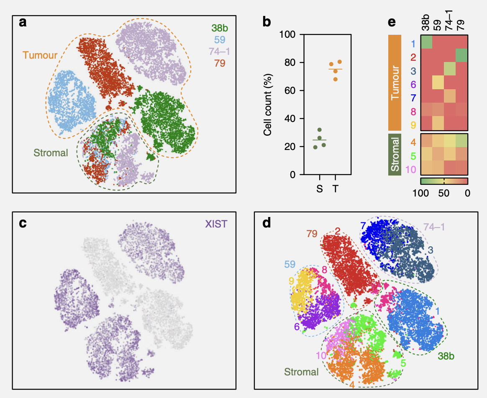
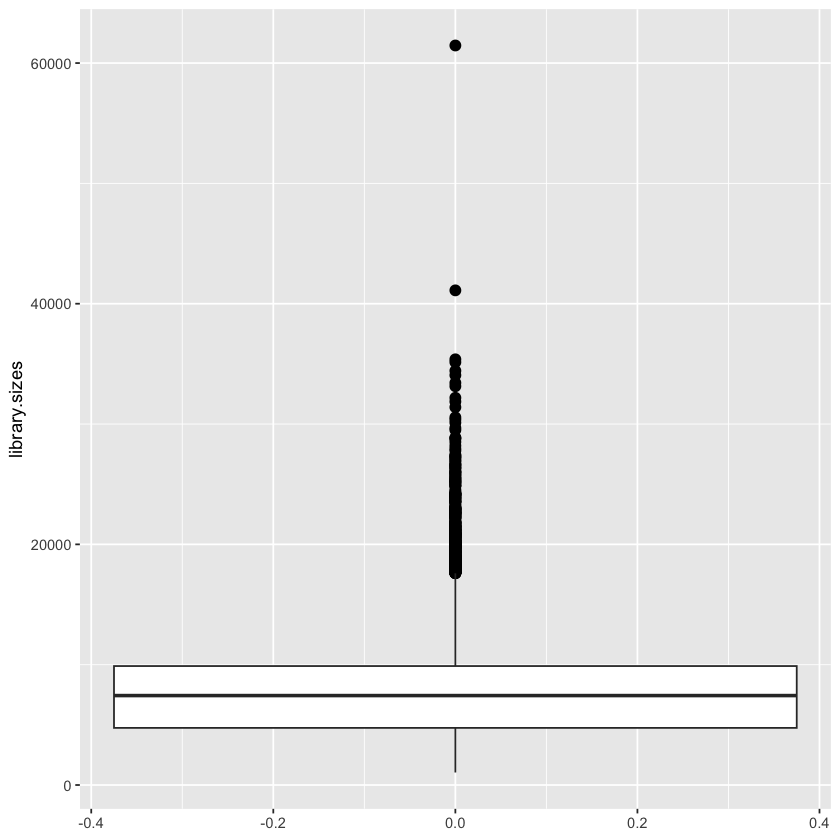
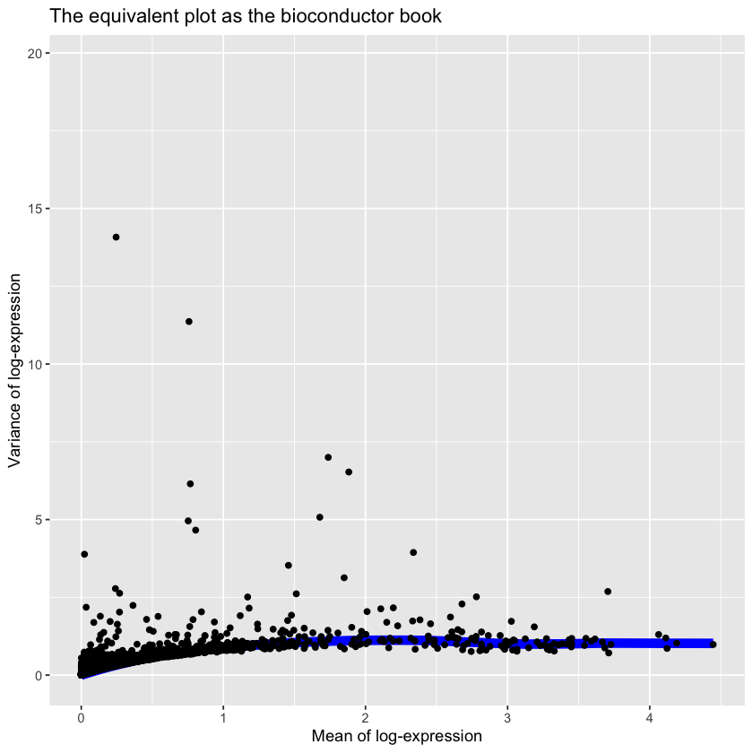
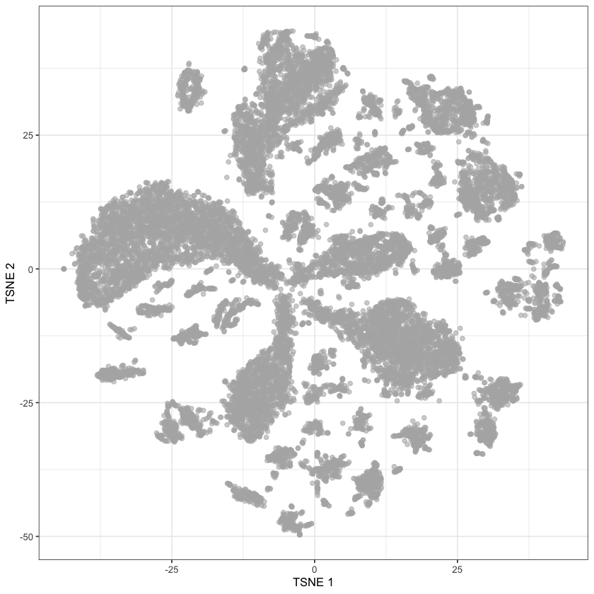
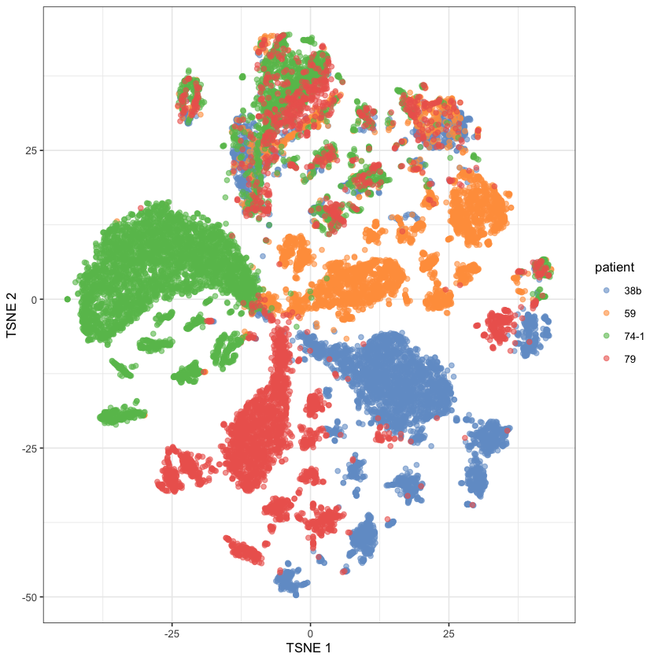

file.path = './localdata/E-MTAB-8559-quantification-raw-files/'A Living Biobank of Ovarian Cancer – Figure 5a
Work
Omics
Useful
Paper Replication
Another scRNA paper
Last time on the blog, we were looking at the paper “A living biobank of ovarian cancer ex vivo models reveals profound mitotic heterogeneity” (Nelson et al. 2020). We’ll pick up where we left off, this time trying to recreate Figure 5.

Recap: Loading the Data
# Load in the matrix of expected raw counts
raw.counts <- Matrix::readMM(
paste(
file.path,
'E-MTAB-8559.aggregated_filtered_counts.mtx',
sep=''
)
)
# Load in the row names (genes)
row.info <- read.table(
paste(
file.path,
'E-MTAB-8559.aggregated_filtered_counts.mtx_rows',
sep=''
),
header=FALSE,
col.names=c("Ensembl.ID", "Redundant")
)
if (all(row.info['Ensembl.ID'] != row.info['Redundant'])) {
# I don't understand why these datasets tend to write
# the same name twice in each row???
print("Warning: second column is not actually redundant!")
}
# Drop duplicate column from genes
row.info <- row.info['Ensembl.ID']
# Load in the column names (single cells)
col.info <- read.table(
paste(
file.path,
'E-MTAB-8559.aggregated_filtered_counts.mtx_cols',
sep=''
),
header=FALSE,
sep='-',
col.names=c('Sample.Info', 'Cell.Barcode')
)
col.info['Full.ID'] <- apply(
col.info,
1, # Rows
function(row) {
paste(
row['Sample.Info'],
row['Cell.Barcode'],
sep='-'
)
})
# Load in the experimental design matrix
exp.design.table <- read.table(
'./localdata/ExpDesign-E-MTAB-8559.tsv',
header=TRUE,
sep='\t'
)Filtering and Normalization
dim(raw.counts)- 23284
- 19880
There are 23,284 genes and 19,880 cells - which is quite a lot! So we should probably filter some things out.
We used three measures to identify and remove the low-quality cells. Namely, the library size; the number of expressed genes; and the proportion of reads mapped to mitochondrial genes in all four samples. Cells exhibiting a library size lower than three Median Absolute Deviations (MAD) were filtered out. Also, cells expressing a gene count lower than three MAD were filtered out. For mitochondrial read proportions, we filtered out the cells that displayed a percentage of reads mapping to mitochondrial genes greater than three MAD.
Library Size Filtering
library.sizes <- Matrix::colSums(raw.counts)library.median.size <- median(library.sizes)
median.absolute.deviation <- median(abs(library.sizes - library.median.size))
library.lower.bound <- library.median.size - 3*median.absolute.deviation
any(library.sizes < library.lower.bound)
FALSE
It seems that none of the cells have a sufficiently low library size to be filtered out.
Gene Count Filtering
gene.counts <- Matrix::colSums(raw.counts > 0)gene.median.counts <- median(gene.counts)
median.absolute.deviation <- median(abs(gene.counts - gene.median.counts))
gene.lower.bound <- gene.median.counts - 3*median.absolute.deviation
gene.filter.index <- gene.counts < gene.lower.bound
any(gene.filter.index)
TRUE
sum(gene.filter.index)
557
We’ll filter out these 557 cells.
# gf for gene filtering
filtered.counts.gf <- raw.counts[, !gene.filter.index]
filtered.row.info.gf <- row.info
filtered.col.info.gf <- col.info[!gene.filter.index, ]Mitochondrial Filtering
For this we’ll use the biomart package.
Install: biomaRt
conda search bioconda::r-biomart
conda install bioconda::bioconductor-biomart=2.54.0 -yThis is the first time I’ve had to use the bioconda channel, but their website clearly shows they’re built on top of conda-forge so I know I’m not going to get burned by channel conflicts as has happened before. Unfortunately it doesn’t work, all versions of biomart have dependency conflicts somewhere (so maybe I have been burned by channel conflicts…)
So now I will install biocmanager and install it the in-R way.
# Bash
conda search conda-forge::r-biocmanager
conda install conda-forge::r-biocmanager=1.30.19 -y# R
BiocManager::install("biomaRt")library("biomaRt")# Configure biomart to use human info (as opposed to other species)
mart <- useDataset("hsapiens_gene_ensembl", useMart("ensembl"))
gene.to.symbol.map <- getBM(
filters="ensembl_gene_id",
attributes=c(
"ensembl_gene_id",
"hgnc_symbol"
),
values=filtered.row.info.gf$Ensembl.ID,
mart=mart
)Annoyingly, getBM silently drops IDs when it can’t find a matching attribute, so we loose twenty genes:
length(gene.to.symbol.map$ensembl_gene_id)
length(filtered.row.info.gf$Ensembl.ID)
23264
23284
the.lost.genes <- setdiff(
filtered.row.info.gf$Ensembl.ID,
gene.to.symbol.map$ensembl_gene_id
)We’ll filter these genes out:
non.missing.gene.index <- !(filtered.row.info.gf$Ensembl.ID %in% the.lost.genes)
filtered.counts.mito <- filtered.counts.gf[non.missing.gene.index,]
filtered.row.info.mito <- filtered.row.info.gf[non.missing.gene.index,]
filtered.col.info.mito <- filtered.col.info.gfAnd then continue with our attempt to filter out highly-mitochondrial cells.
# For some reason, r is behaving really strangely with `strsplit`
# which is why this function is so strangely complicated
mito.genes.index <- sapply(
gene.to.symbol.map$hgnc_symbol,
function(x) {
if (x == "") {
return(FALSE)
}
split <- strsplit(x, '-')
if (length(split) >= 1) {
split. <- split[[1]]
if (length(split.) > 1) {
split. <- split.[[1]]
}
out <- tolower(split.) == 'mt'
return(out)
}
else {
return(FALSE)
}
}
)gene.to.symbol.map[mito.genes.index, ]| ensembl_gene_id | hgnc_symbol | |
|---|---|---|
| <chr> | <chr> | |
| 15116 | ENSG00000198695 | MT-ND6 |
| 15119 | ENSG00000198712 | MT-CO2 |
| 15127 | ENSG00000198727 | MT-CYB |
| 15146 | ENSG00000198763 | MT-ND2 |
| 15153 | ENSG00000198786 | MT-ND5 |
| 15162 | ENSG00000198804 | MT-CO1 |
| 15183 | ENSG00000198840 | MT-ND3 |
| 15203 | ENSG00000198886 | MT-ND4 |
| 15205 | ENSG00000198888 | MT-ND1 |
| 15211 | ENSG00000198899 | MT-ATP6 |
| 15234 | ENSG00000198938 | MT-CO3 |
| 15790 | ENSG00000212907 | MT-ND4L |
| 17277 | ENSG00000228253 | MT-ATP8 |
So now we have a list of all mitochondrial genes.
mito.counts <- Matrix::colSums(filtered.counts.mito * mito.genes.index)
not.mito.counts <- Matrix::colSums(filtered.counts.mito * !mito.genes.index)mito.percent <- mito.counts / not.mito.countsmito.median.percent <- median(mito.percent)
median.absolute.deviation <- median(abs(mito.percent - mito.median.percent))
mito.lower.bound <- mito.median.percent - 3*median.absolute.deviation
mito.index <- mito.percent < mito.lower.bound
any(mito.index)
TRUE
sum(mito.index)
99
filtered.counts.mito.2 <- filtered.counts.mito[, !mito.index]
filtered.row.info.mito.2 <- filtered.row.info.mito
filtered.col.info.mito.2 <- filtered.col.info.mito[!mito.index, ]Multiplets
After this filtering two cells still showed an outlier distribution on the library size. These two “cells” were assumed to be muliplets and were excluded from further analyses.
To see the multiplets, we can make a box and whisker plot.
library("ggplot2")# We need to recreate the sizes as things have been filtered since then
library.sizes <- Matrix::colSums(filtered.counts.mito.2)
sizes.to.plot <- data.frame(library.sizes)ggplot(sizes.to.plot, aes(y=library.sizes)) +
geom_boxplot(outlier.colour="black", outlier.shape=16,
outlier.size=3, notch=FALSE)
This box-and-whiskers plot shows more than two outliers, although there are two cells that are clearly more outlier-y than the rest. We should just filter out the two obvious ones, to adhere to the paper, but we’ll filter out all of them for the sake of reducing our dataset further.
An outlier is an observation that is numerically distant from the rest of the data. When reviewing a boxplot, an outlier is defined as a data point that is located outside the fences (“whiskers”) of the boxplot (e.g: outside 1.5 times the interquartile range above the upper quartile and bellow the lower quartile). – R Statistics Blog, available here.
offset <- 1.5 * IQR(library.sizes)
quants <- quantile(library.sizes, probs=c(0.25, 0.75))
quants["25%"] <- quants["25%"] - offset
quants["75%"] <- quants["75%"] + offset
outliers.index <- library.sizes < quants["25%"] | library.sizes > quants["75%"]
sum(outliers.index) / length(outliers.index)
0.0242925509779442
About 2.5% of the data is an outlier! Which to me feels as if they’re not-so-outlier-y after all! (It goes up to 8% if you use the unfiltered data).
Sidequest: What is the largest percent of a dataset that we can make be outliers?
Well, assuming you have a dataset with 4 elements, the IQR is determined by the middle two elements; you can move the outer two as far away from it as possible. Thus you can force them to be outliers, giving you an outlier percentage of 50%.
This should be optimal, because at least 50% of the data has to lie within the IQR by the definition of the IQR.
50%
Normally I’d be reluctant to remove these, but we have so much data that it’d be nice to shave some of it off1.
filtered.counts.iqr <- filtered.counts.mito.2[, !outliers.index]
filtered.row.info.iqr <- filtered.row.info.mito.2
filtered.col.info.iqr <- filtered.col.info.mito.2[!outliers.index, ]dim(filtered.counts.iqr)- 23264
- 18757
Normalization and miscellaneous filtering
Raw counts of the remaining cells were then normalised using the deconvolution-based method and then log-transformed. We also filtered out the genes with average counts below 0.01 assuming these low-abundance genes to be unreliable for statistical inference.
The question is - what is this deconvolution-based method? I found this helpful resource which describes it well. Essentially, we want to be able to normalize each cell by their library size, but due to the sparsity of scRNA-seq we need to pool cells together to achieve sufficient mass. We then “deconvolve” the pooled values to find them on a per-cell basis.
Install: scran
BiocManager::install("scran")library(scran)quick.clusters <- quickCluster(filtered.counts.iqr)Warning message in regularize.values(x, y, ties, missing(ties), na.rm = na.rm):
“collapsing to unique 'x' values”table(quick.clusters)quick.clusters
1 2 3 4 5 6 7 8 9 10 11 12
1807 1803 3116 1371 2731 1939 1382 1620 150 2608 126 104 deconvoluted.counts <- calculateSumFactors(
filtered.counts.iqr,
cluster=quick.clusters
)
summary(deconvoluted.counts) Min. 1st Qu. Median Mean 3rd Qu. Max.
0.1732 0.6554 0.9378 1.0000 1.2619 3.5655 So, in short, the output is a length of factors to divide the cells by.
dim(filtered.counts.iqr)
length(deconvoluted.counts)- 23264
- 18757
18757
filtered.counts.deconv <- filtered.counts.iqr / deconvoluted.counts
filtered.row.info.deconv <- filtered.row.info.iqr
filtered.col.info.deconv <- filtered.col.info.iqrNow we’ll filter out the genes with small mean counts.
small.mean.genes.index <- rowMeans(filtered.counts.deconv) < 0.01filtered.counts.gene.mean <- filtered.counts.deconv[!small.mean.genes.index, ]
filtered.row.info.gene.mean <- filtered.row.info.deconv[!small.mean.genes.index]
filtered.col.info.gene.mean <- filtered.col.info.deconvdim(filtered.counts.gene.mean)- 14872
- 18757
Finally, we’ll log-transform the data. We’ll leave the 0 values as 0 for the sake of our RAM, which means we need to peak into the internal workings of the sparse matrix class.
class(filtered.counts.gene.mean)
'dgCMatrix'
filtered.log.counts <- filtered.counts.gene.mean
filtered.log.row.info <- filtered.row.info.gene.mean
filtered.log.col.info <- filtered.col.info.gene.mean
filtered.log.counts@x <- log(filtered.log.counts@x)dim(filtered.log.counts)- 14872
- 18757
Highly Variable Genes
For visualisation and clustering we first selected the Highly Variable Genes (HVGs). For this we first decomposed the variance of expression in each gene to technical and biological components and identified the genes as HVGs where the biological components were significantly greater than zero.
– Nelson et al. (2020)
I’ll continue following the bioconductor guide on this as I’ve not done it before and would like to do a blog post in the future about it.
gene.var.data <- modelGeneVar(filtered.log.counts)# Visualizing the fit:
gene.var.metadata <- metadata(gene.var.data)
ggplot(
data.frame(data.frame(gene.var.metadata$mean)),
aes(
x=gene.var.metadata$mean
),
) +
#geom_line(aes(y=gene.var.metadata$var)) +
stat_function(fun = gene.var.metadata$trend, size=3, colour='blue') +
geom_point(aes(y=gene.var.metadata$var)) +
xlab("Mean of log-expression") +
ylab("Variance of log-expression") +
xlim(0, max(gene.var.metadata$mean)) +
ggtitle("The equivalent plot as the bioconductor book")Warning message:
“Using `size` aesthetic for lines was deprecated in ggplot2 3.4.0.
ℹ Please use `linewidth` instead.”
Warning message:
“Removed 2594 rows containing missing values (`geom_point()`).”

We now need to indentify the genes where the biological component is significantly2 greater than zero.
signif.genes <- gene.var.data$p.value < 0.05
signif.genes[is.na(signif.genes)] <- FALSE
sum(signif.genes)
6454
hgv.counts <- filtered.counts.gene.mean[signif.genes,]
hgv.log.counts <- filtered.log.counts[signif.genes,]
hgv.log.row.info <- filtered.log.row.info[signif.genes]
hgv.log.col.info <- filtered.log.col.infodim(hgv.log.counts)
dim(hgv.counts)- 6454
- 18757
- 6454
- 18757
Figure 5a
5a) t-Stochastic neighbour embedding (t-SNE) plot showing clustering of single cells from four OCM pairs, with tumour and stromal cells mixed 3:1.
– Caption of Figure 5a
False Start: Which cells are tumour and which cells are stromal?
At first I thought it would be easy to tell which cells are which via hand-labeling, however we can see from below that there is no column that corresponds to cell type other Sample.Characteristic.cell.type., and as we’ll see it’s not a very informative column.
# To pretty-print `colnames`, we pasted them together with \n
# Note that we need to use `collapse`, not `sep` - I'm pretty
# sure this is because `colnames` is a vector rather than
# multiple arguments, so we need to "collapse" it.
#
# Finally, to render the \ns rather than printing "\n", we need
# to use `cat`. All-in-all this was far more complicated
# than I thought it would be to get pretty-print working.
cat(
paste(
colnames(exp.design.table),
collapse='\n'
)
)Assay
Sample.Characteristic.organism.
Sample.Characteristic.Ontology.Term.organism.
Sample.Characteristic.developmental.stage.
Sample.Characteristic.Ontology.Term.developmental.stage.
Sample.Characteristic.age.
Sample.Characteristic.Ontology.Term.age.
Sample.Characteristic.sex.
Sample.Characteristic.Ontology.Term.sex.
Sample.Characteristic.individual.
Sample.Characteristic.Ontology.Term.individual.
Sample.Characteristic.disease.
Sample.Characteristic.Ontology.Term.disease.
Sample.Characteristic.tumor.grading.
Sample.Characteristic.Ontology.Term.tumor.grading.
Sample.Characteristic.metastatic.site.
Sample.Characteristic.Ontology.Term.metastatic.site.
Sample.Characteristic.organism.part.
Sample.Characteristic.Ontology.Term.organism.part.
Sample.Characteristic.cell.type.
Sample.Characteristic.Ontology.Term.cell.type.
Sample.Characteristic.growth.condition.
Sample.Characteristic.Ontology.Term.growth.condition.
Factor.Value.individual.
Factor.Value.Ontology.Term.individual.unique(exp.design.table$Sample.Characteristic.cell.type.)
'mix of stromal fibroblasts and epithelial tumour cells'
Thus every cell is either a stromal fibroblast or an epithelial tumour cell, but we’re not given any indication which is which.
Tumour and stromal cells from the four pairs were mixed 3:1 and analysed in parallel. tSNE plots showed that the majority of cells from each sample formed distinct clusters, whereas smaller fractions formed an overlapping cluster (Fig. 5a). Based on the 3:1 mix, we reasoned that the large distinct clusters represented the tumour cells while the overlapping cluster corresponded to the stromal cells.
So it seems that they didn’t keep track of which cells were which (which makes sense, because it’d probably be pretty hard… Maybe they could have tagged the cells somehow, but maybe that’d be expensive or inaccurate - it’s hard for me to say as I don’t have the background). Rather, they just inferred them from tSNE plots.
Spoiler: We don’t know which!
So we need to run tSNE - ideally, we’d like to use the exact same packages they used for analysis, but they used scanpy, a Python package, and this is an R notebook3. So, instead, we’ll continue to use the scran package.
However, before we run tSNE we have do to (yet another) dimensionality reduction:
These HVG genes were then used to reduce the dimensions of the dataset using PCA. T-SNE plots were then generated by taking 1–14 components of the PCA.
sce.data <- SingleCellExperiment(
assays=list(
counts=hgv.counts,
logcounts=hgv.log.counts
)
)sce.data.pca <- fixedPCA(
sce.data,
rank=14,
subset.row=NULL
)dimnames(.) <- NULL translated to
dimnames(.) <- list(NULL,NULL)
dimnames(.) <- NULL translated to
dimnames(.) <- list(NULL,NULL)
dim(reducedDim(sce.data.pca, "PCA"))- 18757
- 14
To run tSNE, we need the scater library - note that there is only one “t” in its name!
Install: scater
BiocManager::install("scater", type="mac.binary")You should probably remove the mac.binary bit if not on a Mac, but if you’re on a Mac you might need it - without it I got the following uninformative error:
'getOption("repos")' replaces Bioconductor standard repositories, see
'?repositories' for details
replacement repositories:
CRAN: https://cran.r-project.org
Bioconductor version 3.16 (BiocManager 1.30.19), R 4.2.1 (2022-06-23)
Installing package(s) 'scater'
also installing the dependencies ‘textshaping’, ‘Cairo’, ‘ragg’, ‘ggrastr’
Warning message in install.packages(...):
“installation of package ‘textshaping’ had non-zero exit status”
Warning message in install.packages(...):
“installation of package ‘Cairo’ had non-zero exit status”
Warning message in install.packages(...):
“installation of package ‘ragg’ had non-zero exit status”
Warning message in install.packages(...):
“installation of package ‘ggrastr’ had non-zero exit status”
Warning message in install.packages(...):
“installation of package ‘scater’ had non-zero exit status”
Updating HTML index of packages in '.Library'
Making 'packages.html' ...
done
Old packages: 'boot', 'broom', 'cli', 'cpp11', 'crayon', 'desc', 'digest',
'evaluate', 'forcats', 'generics', 'gtable', 'hms', 'IRkernel', 'isoband',
'jsonlite', 'mitml', 'nlme', 'pillar', 'pkgload', 'repr', 'rstudioapi',
'scales', 'statmod', 'stringi', 'stringr', 'survival', 'testthat',
'viridisLite'library(scater)Warning message:
“package ‘scater’ was built under R version 4.2.2”sce.data.tsne <- runTSNE(sce.data.pca, dimred="PCA")plotReducedDim(sce.data.tsne, dimred="TSNE")
The only thing remaining is to color by patient.
exp.design.index <- exp.design.table$Assay %in% hgv.log.col.info$Full.IDsce.data.tsne$patient <- exp.design.table[exp.design.index, ]$Sample.Characteristic.individualplotReducedDim(sce.data.tsne, dimred="TSNE", colour_by="patient")
Voilà, it’s done! That took me ages4 - mainly because of my lack of experience with R and its ecosystem5. But, it’s done. Our graph does not look as nice as theirs, but I’m sure it could do if we were to mess with the tSNE parameters. There are clear patient-related clusters, and then there are sum that are much more mixed which are presumably the stromal clusters.
Since it took some time to run the normalization steps, and because we’ll be continuing where we left off in the next post, let’s save our data:
Matrix::writeMM(hgv.counts, "./localdata/ovarian-cancer-hgv-counts.mtx")
write.csv(hgv.log.col.info$Full.ID, "./localdata/ovarian-cancer-hgv-columns.csv")
write.csv(hgv.log.row.info, "./localdata/ovarian-cancer-hgv-rows.csv")
write.csv(exp.design.table[exp.design.index, ], "./localdata/ovarian-cancer-hgv-metadata.csv")NULLReferences
Nelson, Louisa, Anthony Tighe, Anya Golder, Samantha Littler, Bjorn Bakker, Daniela Moralli, Syed Murtuza Baker, et al. 2020. “A Living Biobank of Ovarian Cancer Ex Vivo Models Reveals Profound Mitotic Heterogeneity.” Nature Communications 11 (1): 822. https://doi.org/10.1038/s41467-020-14551-2.
Footnotes
I know that’s not the normal attitude, I just don’t want to have to deal with any code that takes longer than a second to run 😅. Although I chose R over numpy so clearly I don’t care that much about speed… Although I guess I’m sure that R can be fast too if you understand how you’re supposed to use it.↩︎
In the statistical sense.↩︎
If only
sos-notebookdidn’t ruin syntax highlighting… This might require a Sidequest sometime soon.↩︎Two days, to be precise. It’s 20:54 Jan 21 and I started in the morning of Jan 20 (with many distractions, to be fair)↩︎
Shoutout to my hour-long adventure trying to install
scater.↩︎